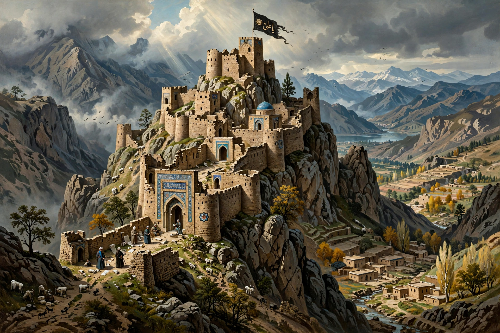

The Nizari Ismailis are the largest branch of Isma'ilism, the second-largest branch of Shia Islam. They emphasise the esoteric (batin) interpretation of scripture and follow a living hereditary Imam, currently the Aga Khan.

| Nizari Ismaili | |
|---|---|
| Classification | Shia Islam, Ismailism |
| Imam | Aga Khan (Rahim al-Hussaini since 2025) |
| Region | Worldwide diaspora |
| Origin | 1094 split over Fatimid succession |
The Nizaris formed after the death of Fatimid caliph al-Mustansir Billah in 1094, supporting his son Nizar over al-Musta'li. Under Hasan-i Sabbah they established a state centred on Alamut Castle in Persia and fortresses in Syria, resisting Seljuks and Crusaders. Western legends called them Assassins. The Mongols destroyed Alamut in 1256.
Later Imams emerged in Persia, then India. Aga Khan I moved in the 19th century; the community (Khojas and others) spread to East Africa, and later globally. Aga Khan IV (1957-2025) founded the Aga Khan Development Network.
Nizaris affirm the shahada, esoteric interpretation (ta'wil), and the Imam's authoritative guidance. Congregations meet in jamatkhanas. See Ismailism, Aga Khan, Alamut Castle.